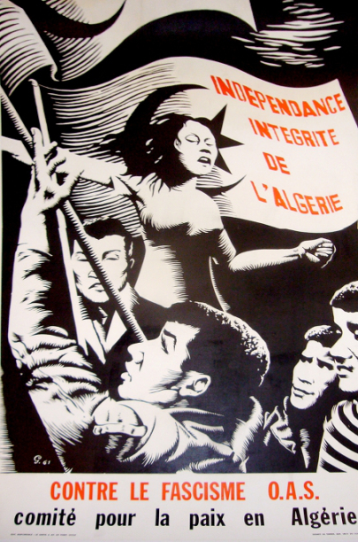
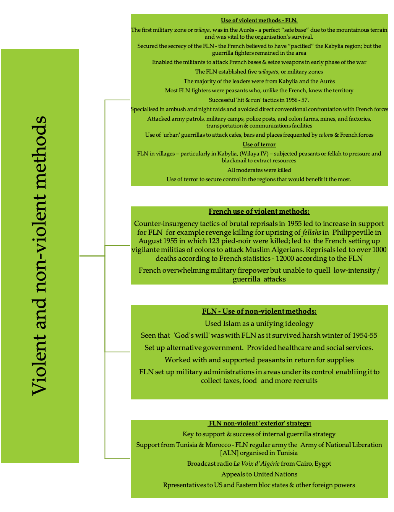
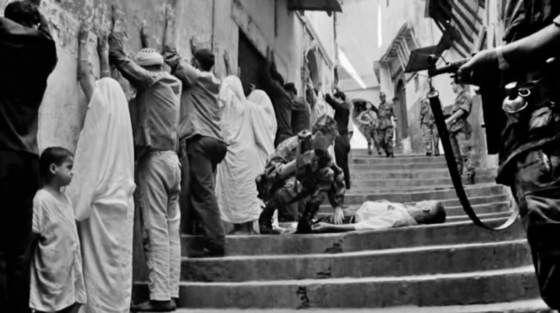
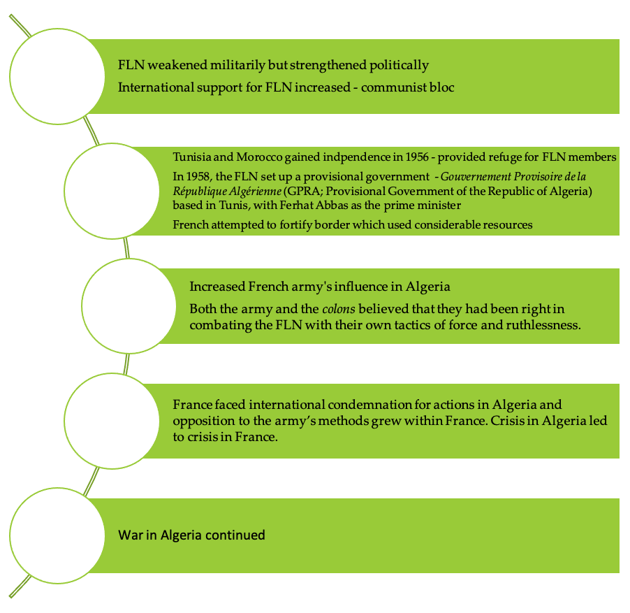
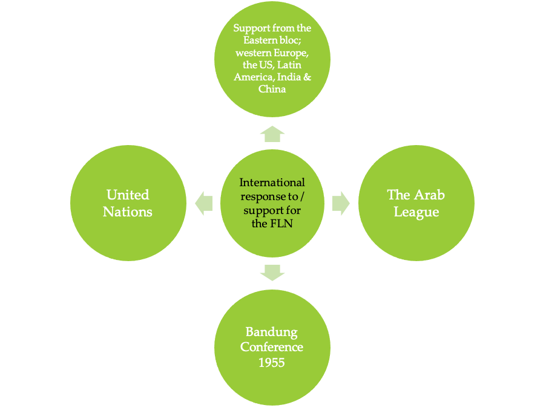
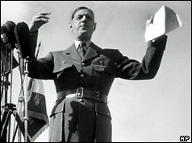
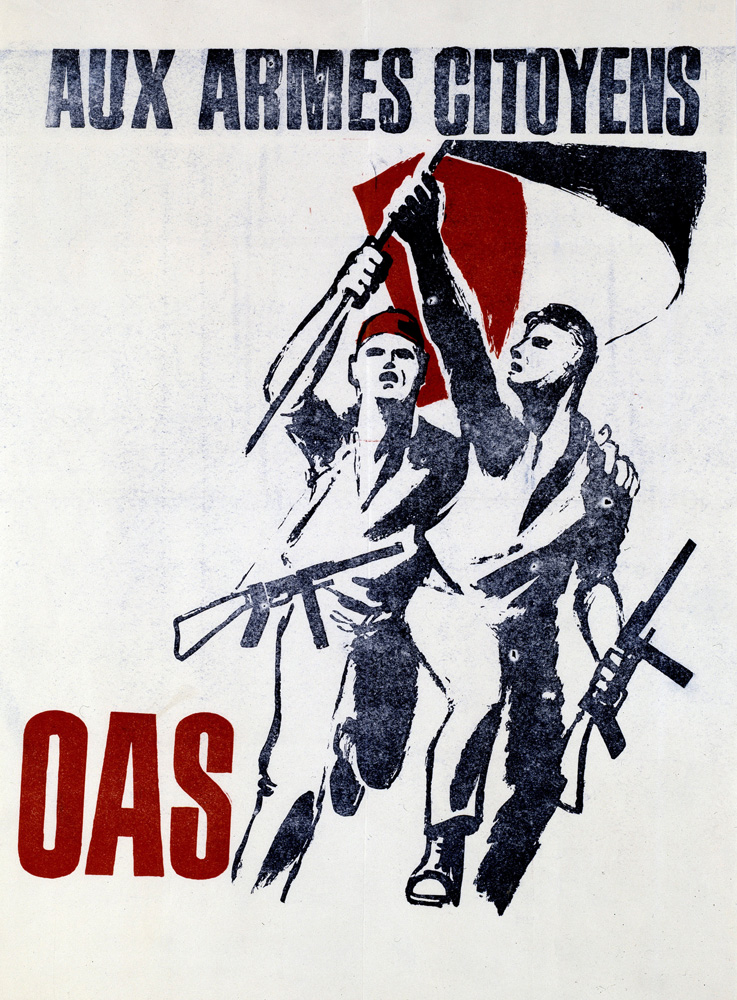
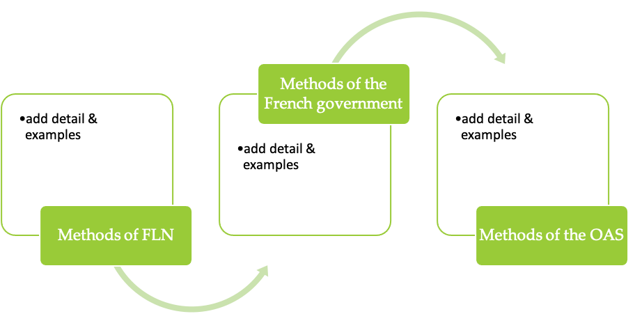
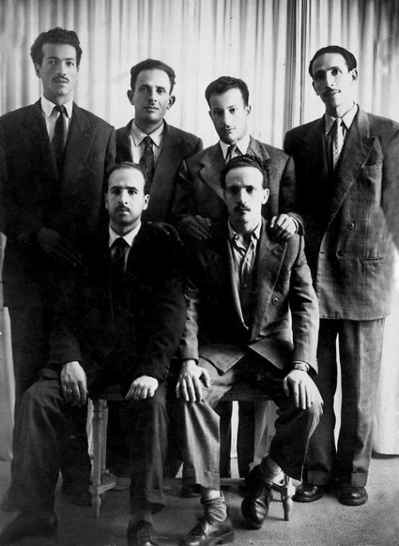

IB Docs (2) Team
IB Docs (2) Team

2. Methods used and reasons for success

The Algerian War was one of the most savage African struggles for independence; it eventually became a four way struggle between the Algerian nationalists, the French government, the European colonists and, in the final stage, General de Gaulle as president of the Republic of France.Guiding questions:
What methods, violent and non-violent, were used to achieve independence?
What was the significance of the battle of Algiers?
What were the results of the Battle of Algiers?
What was the role and relative importance of other factors in the success of independence movements?
What role did international support play in Algeria achieving independence in 1962?
What was the role of president Charles De Gaulle in the course of the independence conflict?
What was the OAS and how did its violent methods lead to the end of the war of independence in Algeria?
What was the role and importance of leaders of the indepenence movements?
How did the Evian peace talks end the war in Algeria?
1. What methods, violent and non-violent, were used to achieve independence?
[Following the French war with Vietnam] the FLN was able to pick a blueprint of people’s war ready-made… Lacking the Vietminh’s regular military strength and its Chinese sanctuary, the FLN ‘s campaign was more strongly marked by terrorism.
Charles Townshend.
The French military played a key role in the development of the conflict in Algeria. The defeat at Dien Bien Phu in Vietnam, was a deep humiliation for the military and one that must not be repeated. The French army thus supported the colons' perspective that Algeria must remain under French control. When the scale of the FLN operations escalated in 1955, the French military attempted to crush the guerrillas. A French tactic was to use helicopters to move troops and to launch aerial attacks. The FLN lacked significant support from a major foreign power and therefore did not have anti-aircraft missiles which made the French strategy more effective. The environment – open and arid terrain – made it easier for the French army to identify FLN forces on the ground.
The conflict involved both sides targeting civilians. The FLN used terror against civilians to deter the population from working with the French authorities. The FLN ordered all Muslims to give up alcohol, and smoking on penalty of mutilation or death. The French military also targeted civilians; a policy of ‘collective responsibility’ was implemented which meant that all Muslims could be held responsible for the FLN guerrilla attacks; an FLN attack on French forces would result in the French army taking retaliatory action against civilians. The cycle of violence and retaliation perpetrated by both sides led to the radicalization of both Europeans and Algerians. In addition, the scale of the brutality, including the use of torture by French forces, led to increased tension and division within France itself.
Task One
ATL: Thinking and communication skills
This video is currently unavailable on YouTube (June 2021). Please let us know if you find another link or if it reappears!
Watch: 'The Algeria War, 1954 – 62. Episode 1: Road to rebellion' from 36.00 minutes.
Discuss with a partner what had been achieved through the use of violent methods in Algeria by 1956.
Task Two
ATL: Thinking and research skills
Read through the following chart below which summarises the role of violent methods in determining the outcome of the Algerian war.
Get into groups and research each theme in more depth. You should make sure you have examples of where and when the FLN used guerrilla warfare strategies effectively, and examples of how the use of violent methods by the French were significant in the outcome.
NB You will need to add the role of OAS’ violent methods in the final act of the war of independence

Task Three
ATL: Thinking Skills
In pairs read through the source below and identify the reasons Jeremy Black outlines for the FLN’s victory, and the extent to which it’s violent methods led to independence.
Extract from Jeremy Black book, Introduction to Global Military History. 2005.
A summary of this conflict illustrates the general difficulty of mounting effective counter-insurgency operations. Tough anti-insurrectionary measures, including widespread torture, which was seen as a justified response to FLN atrocities, gave the French control of the capital, in 1957. However, although undefeated in battle, and making effective use of helicopter-borne units, the French were unable to end guerrilla action in what was a very costly struggle. And French moves [strategy / tactics] were often counter-productive in winning the loyalty of the bulk of the population. There were also operational problems: aside from the difficulty of operating active counter-insurgency policies there was also a need to tie up large numbers of troops in protecting settlers and in trying to close the frontiers to the movement of guerrilla reinforcements, so that much of the army was not available for offensive purposes, a situation that helped the insurgents.
Task Four
ATL: Thinking and communication skills
‘The disfiguring of French victims, the widespread appearance of le grand sourire [the broad smile], which was how the French macabrely described the Algerian practice of throat slitting, the bombing of civilian public places – these acts of terrorism led to French soldiers practicing torture to obtain information and engaging in indiscriminate killing…’ Raymond Betts
1. The use of torture by French forces was highly controversial and has led to the conflict being known as the ‘dirty war’ in France to this day. In pairs read the ‘first had account of torture’, a letter written by Omar Hamadi, an FLN fighter who was being held in Algiers prison. The letter was written to his lawyer in 1960.
Discuss a] how French forces might attempt to justify the use of torture b] why torture would be counter-productive to French aims in Algeria.
2. A former British army officer and lecturer in international relations, Edgar O’balance, in The Algeria insurrection 1954-62 (1967) considered French tactics in Algeria as necessary to defeat the FLN. He concluded that French strategy won the war militarily but lost the war politically.
In pairs discuss this perspective on French strategy during the war in Algeria
Task Four
ATL: Thinking skills
Read through the source below and answer the questions that follow:
Henri Maillot was born in Algeria of European origin and was an officer cadet in the French army. He initially stole weapons for, and then fought with, the FLN. He was killed in a battle with French forces in June 1956. Maillot sent this letter to the French media in April 1956.
The French writer Jules Roy, an air force colonel, wrote a few months ago: “If I were a Muslim I’d be on the side of the fellaghas.” I’m not Muslim, but I am Algerian of European origin. I consider Algeria to be my homeland. I feel that I should have the same obligations towards it as all of its children. At a moment when the Algerian people has risen up to free its soil from the colonialist yoke, my place is at the side of those who have taken up the fight for liberation. The colonialist press cries out “treason”… It cried “treason” when under Vichy French officers passed over to the Resistance, while it served Hitler and fascism. In truth, the traitors to France are those who, in order to serve their selfish interests, disfigure in the eyes of the Algerians the true face of France and its people, with its generous, revolutionary, and anti-colonialist traditions. What is more, every progressive in France and the world recognizes the legitimacy and correctness of our national demands. The Algerian people, so long scorned and humiliated, has taken its place in the great historic movement for the liberation of colonial peoples which has set Africa and Asia ablaze. Its victory is certain. It is not, as the big landowners of this country would like to have you believe, a racial combat, but a fight of the oppressed without distinction of origin against their oppressors and their lackeys, without distinction of race. This isn’t a matter of a movement directed against France and the French, or against the workers of European or Israelite origin. They have a place in our country. We don’t confuse them with our people’s oppressors. In carrying out my act, in delivering to the Algerian combatants the arms they need for the fight for liberation, arms that will be used exclusively against the military and police forces and their accomplices, I am conscious of having served the interests of my country and my people. Including those of the momentarily misled European workers.
Questions:
1. What reasons does Maillot give for supporting the fight against the French in Algeria?
2. Why would the ‘Maillot Affair’ have shocked the French public at the time?
Task Five
ATL: Thinking skills
In pairs read this article and discuss how the FLN pursued non-violent methods to achieve independence.
Extension activity
Watch this webinar on the relative importance of violent and non-violent methods in independence and human rights struggles.
Dr Erica Chenoweth, Assistant Professor of Government at Wesleyan University looks at the strategic advantage of nonviolent struggle and civil resistance. Armed insurgency may have triumphed in the Algerian war of independence, the Chinese Revolution, and the anti-Soviet war in Afghanistan. These cases, among others, have convinced many observers that violent insurgency is likely to succeed. Moreover, insurgents often claim that they turn to violence as a last resort, having exhausted all other methods of seeking redress for their grievances. Professor Chenoweth challenges both claims, arguing that nonviolent resistance has actually been more effective in the 20th century than violent resistance. She presents a new data set, which provides robust statistical evidence of the strategic superiority of nonviolent resistance, even in cases where the opponent regime is brutal. The research implies that violent resistance is seldom necessary, as many insurgents claim. Rather, civil resistance can be an effective substitute for insurgency in civil wars.
What was the significance of the battle of Algiers?

The French military seized on the opportunity to turn the tide of the conflict and regain control over Algeria in the ‘Battle of Algiers’. In September 1956, the FLN began assaults on the Algerian capital which involved bloody terrorist attacks against Europeans, Arab ‘collaborators’, and French armed forces. The aim of the FLN was not only to bring terror to the city, but also to draw more international attention to its cause. For the French, and international observers, the role played by female Muslim women (who put bombs in cafes that were popular with colon families) was particularly appalling. However, waging urban guerrilla warfare in the cities was a high-risk strategy for the FLN. Lacoste gave the French General Jacques Massu and the 10th Paratroop Division extraordinary power and his forces used torture and terror to destroy FLN hideouts.
French historian Benjamin Stora described the Battle of Algiers as follows:
It was truly ‘blood and shit,’ as Colonel Marcel Bigeard said, a horrendous battle, during which bombs blew dozens of European victims to pieces while paratroopers dismantled the networks by uncovering their hierarchy, discovered caches, and flushed out the FLN leaders installed in the city. Their means? Electrodes, dunking in bath tubs, beatings. Some of the torturers were sadists, to be sure. But many officers, non-commissioned officers, and soldiers would live with that nightmare for the rest of their lives. The number of attacks perpetrated fell from 112 in January to 39 in February, then to 29 in March. The FLN’s command centre, run by Abbane Ramdane, was forced to leave the capital. Massu had a first victory.
What were the results of the Battle of Algiers?
Task One
ATL: Thinking skills
In pairs read through the chart below and discuss what made the Battler of Algiers significant in the course of the Algerian independence war.

Extension tasks
Extension tasks
Task 1:
You can watch the famous 1966 film by Gillo Pontecorvo, The Battle of Algiers. Make notes on the strategies and tactics detailed in the film. Discuss with a partner what perspective on the conflict the film seems to present.
Task 2:
The Battle of Algiers was a highly controversial film when it was released in the 1960s as it depicts atrocities committed by both sides, including scenes of torture perpetrated by French forces. It was banned in France for 5 years. The film had a revival in the early 20th century due to the apparent parallels with the situation the US and its allies faced in conflicts in Afghanistan and Iraq.
Read the following article and discuss with a partner why the US Pentagon may have arranged a ‘special in-house’ screening in 2003.
The Battle of Algiers (the Guardian)
Peter Bradshaw: It is of its time in many ways, yet somehow more extreme, and more contemporary, than anything else around.
2. The role and relative importance of other factors in the success of independence movements
What role did international support play in Algeria achieving independence in 1962?
Task One
ATL: Research skills
The FLN understood the importance of gaining international support for its cause. It actively pursued this support using non-violent methods. In pairs research in more depth the role of the following in support of the FLN and / or in putting pressure on the French government.

Extension Task
With a partner, research why Britain supported France against the independent movement Algerian.
What was the role of president Charles De Gaulle in the course of the independence conflict?

‘In the last four years in Algeria about 1500 civilians of French descent have been killed, whereas more than 10,000 Muslims – men, women and children – have been massacred by the rebels, almost always by having their throats slit… How many lives, how many homes, how many harvests did the French army protect in Algeria! And to what slaughter would we be condemning this country if we were stupid and cowardly enough to abandon it!’
Charles de Gaulle speaking at a press conference in October 1958.
Starter:
Follow the link and read how de Gaulle’s assumption of the presidency was reported in Britain at the time.
BBC ON THIS DAY | 1 | 1958: De Gaulle returns to tackle Algeria (news.bbc.co.uk)
President Rene Coty asked the general to form a new government as the war in Algeria threatens to bring civil war to a France divided into those who want to see the colony independent and those who wish it to remain a part of France.
The situation in Algeria had led to tension and outrage in Paris where extremists had even considered launching a paratrooper attack on the French capital to challenge the government. The political crisis deepened in France and in May 1958 the National Assembly voted to end the Fourth Republic and to invite Charles de Gaulle to take power. De Gaulle was favoured by the colons and the military as they believed that he would be able to crush the FLN and retain Algeria. In addition, de Gaulle had sound relations with the Moroccans and the Tunisians, and Muslim Algerians also wanted his return as they believed he would offer a favourable settlement to the conflict. French politicians thus concluded that the only solution to the Algerian crisis was to give power to de Gaulle. Under a new constitution, he was given wide ranging powers, initially for 6 months, in order to restore authority. The popularity of de Gaulle was revealed in a referendum on 28 September 1958, where 79.2% supported the new constitution and the creation of the Fifth Republic.
De Gaulle understood that France could not indefinitely commit to fighting a guerrilla war in Algeria. Therefore, despite the support that de Gaulle had from the army, and the colons, he was determined to bring an end to the costly conflict. The war in Algeria had hindered economic modernization and development in France and had meant that it had not been taking a leading role in Europe. De Gaulle believed that negotiations and concessions to the FLN were necessary; he also came to realise that to end the war France would have to grant Algeria full independence.
De Gaulle’s policies were:
- Put Algeria back under the control of the civilian government in Paris
- Continue to direct the army to attack FLN bases to weaken them
- Give a key radio broadcast on 16 September 1959 (seen as a turning point in Franco-Algerian relations) which set down three alternatives for Algeria - secession, integration or a federal relationship with France.
The broadcast implied that De Gaulle was potentially moving towards an Algerian Algeria and away from Algerie francaise. In response, in January 1960, the colon ultras rioted in Algeria and erected barricades in what became known as ‘Barricades Week’. In tacit support of the colons, the army took no action to stop the ensuing violence against the local police. But the colon rising was contained and in response de Gaulle made a dramatic TV address in which he declared that he would not be swayed, and reminded the army that ‘in your mission there is no room for equivocation or interpretation’. Barricades Week was ultimately a failure for the colon leaders – however, although the army had not rebelled directly against de Gaulle, army leaders’ hostility towards his plans increased.
Then, on 4 November 1960, de Gaulle declared that his plan was not for an Algeria governed by France but for an ‘Algerian Algeria’. This declaration was followed by a referendum where the French public voted in favour of de Gaulle’s policy. On 15 March 1961, it was announced that there would be peace talks with the FLN.
These developments were too much for the French generals and they launched the ‘Generals’ Insurrection’. Led by General Maurise Challe, the 1st foreign paratroop regiment seized control of Algiers before the peace talks could begin. Again, de Gaulle used the media to end the crisis, making another radio broa dcast - this time to appeal directly to the troops on the day of the insurrection in April 1961:
‘Offices, non-commissioned officers, policemen, sailors, soldiers and airmen, I am in Algiers with Generals Zeller and Jounard and in touch with General Salan so as to keep the army’s oath to ensure a French Algeria, so that our dead many not have died in vain. A government of abandonment is preparing to hand over the departments of Algeria to the external organisation of the rebellion. Do you want Mers-el-Kebir and Algiers to become Soviet bases tomorrow? I know your courage, your pride, you discipline. The army shall not fail in its mission.’
On 20 July 1960, Algerian nationalist, Saad Dahlab declared: ‘France must understand now that a negotiation cannot be entered into today on what Ferhat Abbas demanded with moderation in 1943. Our people have not eaten grass and roots in order to obtain a new statute given as a concession.’
What was the OAS and how did its violent methods lead to the end of the war of independence in Algeria?

When the conspiracy and insurrection failed, the Ultras formed an underground army - Organisation de l’armée secrète (OAS; Organization of the Secret Army). It comprised of civilians and military deserters and implemented terror tactics to disrupt the negotiations between Algeria and France. The OAS perpetrated numerous assassination attempts on de Gaulle’s life and had planned to bomb the Eiffel Tower. It was also involved in assassinations and bombings within Algeria which cost an estimated 2000 lives and its campaign continued with brutal ferocity during and after the peace talks. But OAS actions led to widespread disgust and condemnation in France which peaked after a bomb attack in Paris, amongst other casualties, a 4-year-old girl was maimed. Resolve within the French population hardened to finally end the war and restore Algeria to the Algerians.
‘… the sense of outrage and wearied disgust… at the ever-escalating OAS horrors in Algiers was no longer limited to just the French left. The crisis in the Algerian war had been reached in metropolitan France. Algerie francaise was all but dead – killed by the OAS. Almost universally there was a feeling: ‘Il faut en finir!’ Historian Alistair Horne.
Task One
ATL: Thinking skills
Watch 'The Algerian War, 1954-62. Episode 5 The suitcase or the coffin' from 13.10 – 39.00 minutes.
In small groups develop an infographic on the role of OAS violence in fostering agreement between the FLN and the French government. Make sure you quote / make notes on the statement by FLN leader Kedir.
Task Two
ATL: Thinking and self-managment skills
In pairs make a copy of the chart below and after reviewing the information above add details and examples to the text boxes of the methods used by each group that led to the strengthening of the Algerian independence movement.

Task Two
ATL: Thinking skills
Read this following article from Ben Bella on the role and significance of the French who had supported the Algerian independence movement.
3. What was the role and importance of leaders of the independence movements?

The six founding members of the FLN: Rabah Bitat, Mostefa Ben Boulaid, Mourad Didouche, Mohammed Boudiaf, Krim Belkacem and Larbi Ben M’Hidi.
You have already studied the role of key leaders in the early development of the independence movement in Algeria, for example Messali Hadj in the 1930s and his Algeria People’s Party and Ferhat Abbas’ the Algerian Popular Union in 1938. In 1942, Ferhat Abbas had drawn up his ‘Manifesto of the Algerian People’.
Historian Martin Evans sees the tipping point from non-violent methods to violent means was a result of the French government to engage meaningfully with Messali Hadj or Ferhat Abbas. The failure of more moderate groups allowed the nationalist ground to be occupied by those who wanted ‘a violent confrontation with French rule’.
Task One
ATL: Self-management, communication and social skills
In small groups you will create a ‘mini-exhibition’ on the role and importance of the Algerian leaders in the rise of the movement and in successfully achieving independence in 1962.
Begin by reviewing the material you have studied on the early independence movement and the leadership of Messali Hadj and Ferhat Abbas. The role played by others significant individuals should also be considered, for example Benyoucef Benkhedda and Houari Boumedienne. Then using the information on some of the key leaders below as a basis, put together your exhibition. You should include some assessment of the relative importance of each leader in attaining independence in 1962.
Rabah Bitat
- At 16 joined the non-violent Messali Hadj Party – aimed for independence & the confiscation of French settlers' land. Pusued legal methods.
- Events of May 1945, in Setif, convinced Bitat that a violent methods were necessary.
- For Bitat, the time for legal action was over; it was time to begin attacks on French farmers and military posts. The future lay in organisation, effectively in the
- In February 1947 - Formed the Organisation Secrète with four others & broke from Messali. The OS divided Algeria into zones under the responsibility of one leader. Bitat's was south of Algiers. Violent methods to be used to attach farmers and military posts.Tactics first from French resistance during WW2 – then tactics of Vietnamese.
- In 1950, Bitat was sentenced to 10 years for a conspiracy to seize arms and was sentenced to 10 years in prison but he escaped to France and met up with underground organisations.
- When attacks launched on November 1 1954 – Bitat back in south of Algiers – cut telephone lines and organised mass funerals for independence fighters.
- Bitat was denounced by an informer in March 1955 and arrested.He was interrogated and tortured for 12 days.He tried to commit suicide twice. Sentenced to life imprisonment.
- De Gaulle in negotiation with independence leaders agreed to move Bitat to police supervision in May 1961.
- Bitat was released in April 1962 and returned to Algiers to join Ben Bella's first government.
- Bitat was appointed as vice president of Algeria in the cabinet of Ahmed Ben Bella September 1962 to September 1963
Mostefa Ben Boulaid
- Ben-Boulaid was called up by the French to fight in WW2 in 1939 and was awarded medals for his service in 1944.
- He joined the Algerian People’s Party in 1945.He then became a key figure in the ‘Special Organisation’ a secret paramilitary group founded by MTLD member Mohamed Belouiuzdad in 1947 after the massacre Setif.
- He bought weapons for the OS and assisted independence fighters hiding from the French.
- He won a seat in the Assembly of Algeria in 1948 – but the French falsified the results.
- Founding member of the Revolutionary Committee of Unity and Action (CRUA).
- Chaired key meeting to unite the different independence movements in June 1954.
- Ben-Boulaid was member of the Committee of Six independence leaders and was responsible for Area I – Aures.
- Participated in major engagements and battles with the French forces and travelled to Libya to buy arms.
- Arrested on 11 February 1955 in Tunisia and sentenced to death.Escaped prison in November 1955.
- The French killed Ben-Boulaid in a radio-bomb attack on 22 March 1956.
Mourad Didouche
- Didouche organizedmunicipal elections in his area andtravelled to western Algeria to organize the campaign for the Algerian Assembly.
- Arrested in a raid, he managed to escape from the court.
- Founding member of the Special Organization in 1947
- The French sentenced him to 10 years in prison in absentia in 1950
- Joined Ben Boulaid in 1952 to prepare arms to fight the French in a war of independence
- Participated in the June 1954 meetings which attempted to unifify independence groups and determined on the timing for the revolution – November 1st.
- He was head of Area II – Wilaya II.
- One of the writers of the Declaration of 1 November 1954
- Key to political and military organisation in initial war against French.
- Didouche was killed in the Battle of Douar Souadek in January 1955.
Mohamed Boudiaf
- Member of the Messali Hadj’s Algerian People’s Party, then joined the MTLD and the OS.
- Responsible for funding, storing arms and preparing guerrilla fighters in the Setif region.
- Although sentenced to 10 years in prison in absentia he avoided arrest
- Founding member of the CRUA which then became key leader of the FLN in exile in Cairo
- Captured with Ben Bella in 1956 in air craft hijack by French forces
- Elected minister in FLN’s government in exile in 1958, 1960 and 1961
- Released from prison in 1962
Krim Belkacem
- Fought in the French army during WW2
- Joined the Algerian People’s Party in 1946
- Set up cells in 12 villages
- In 1947 and 1950 sentenced to death by French authorities
- Head of a group of maquisards of the OS
- Played key role in June 1954 meeting and was key FLN chief
- Leader of Area III – Kabylie
- Minister of Defence and Foreign Minister in the provisional government of the Algerian Republic in 1958
- Principle FLN negotiator during the Evian agreements in March 1962
Larbi Ben M'hidi
- Member of Messali Hadj’s Algerian People’s Party during WW2
- Arrested after the Setif rising in May1945 and released in March 1946
- Joined Messali Hadj’s MTLD
- Sentenced to 10 years in prison in absentia in 1950
- Founding member of CRUA in March 1954
- Founding member of the FLN and leader of Area V – Oran
- Oran difficult as had been hit by earthquake and had not received arms
- In November 1955, Ben M'hidi took command of the Zone Autonome d'Alger (ZAA)
- At secret conference in August-September 1956 Ben M’hidi elected to the Committee of Coordination and Implementation which would be responsible for executing the war of independence.
- He took command of Algiers in August and was responsible for launching the Battle of Algiers.
- Initiated an insurrectional strike in January 1957 which got the attention of the United Nations.
- Captured in February 1957.Initially under interrogation he impressed French commander with resistance and courage.Then handed over to a special section of French forces, tortured and hanged. On 6th March French press reported he had committed suicide.
Ben Bella
- Volunteered for French army in 1936 and enlisted in 1940. Awarded two medals for service during WW2, including the highest decoration for the Free French forces from Charles de Gaulle.
- Ben Bella shocked by Setif uprising and returned to Algeria to join independence struggle
- French attempted to assassinate him, he subsequently went into hiding
- Founding member of OS as no longer believed that independence could be pursued through non-violent means
- In 1949 he robbed a bank to fund OS, arrested in 1951 and sentenced to 8 years
- Fled to Cairo in 1952 and was based there at the outbreak of the independence war
- One of nine members of the Revolutionary Committee of Unity and Action of the FLN.
- Organised shipments of weapons to Algeria during the war
- Coordinated political strategy
- Assassination attempts continued whilst in Cairo
- Arrested by French military in a plane-hijacking in October 1956
- Held in prison until the Evian accords in 1962. Released on 5 July.
Extension Task
Read this article on Ben Bella
Profile: Ahmed Ben Bella, first president of Algeria (25 December 1916 - 11 April 2012) (Middle East Monitor)
Ahmed Ben Bella's intelligence, ambition and love of his country marked him as a natural leader. Born on 25 December 1918 in the Algerian town of Marnia to Moroccan parents, he showed promise from a...
How did the Evian peace talks end the war in Algeria?

FLN delegation to the Evian peace talks. From left to right: Taïeb Boulahrouf, Saâd Dahlab, Mohamed Seddik Benyahia, Krim Belkacem, Benmostefa Benaouda, Redha Malek, Lakhdar Bentobal, M'Hamed Yazid and Seghir Mostefaï
The peace talks
Algeria is costing us – that is the least one can say… Now our great national ambition has become our own progress, the real source of power and influence. The fact is, decolonisation is in our interest and, as a result, it is our policy.’
Charles de Gaulle, press conference, 11 April 1961.
Peace talks started at Evian despite the violence of the OAS. The first round of talks broke down over whether Algeria included the Sahara. By the second Evian conference, de Gaulle was impatient to end the war and made significant concessions. The rights of French citizens were protected for a period of 3 years instead of permanent guarantees, after which they could opt for Algerian citizenship. For the same 3-year period existing levels of economic and technical assistance were guaranteed from France. In addition, the military would withdraw after 3 years [but France would lease the Mers-el-Kebir naval base for 15 years). Most important of all, France recognized the territorial integrity of Algeria, and so gave up any hope of getting control of the Sahara and its oil (though French companies were allowed leasing rights to continue to develop oilfields).
De Gaulle said: ‘We must concede these details rather than reject an agreement; for there is no comparison between the primary interest, which consists of reaching an agreement, and the secondary interest, which consists of holding a little longer certain things which, anyway, we do not reckon to hold for ever.’
The Evian Accords set out the treaty signed on 18 March, 1962, between France, the Provisional government of the Algerian Republic and the government in exile of the FLN. A formal ceasefire was announced on 19 March. Algeria became a sovereign state on 1 July 1962.
Task One
ATL: Thinking skills
In pairs read the sources below and answer the following questions:
1. What factors does historian Alistair Horne identify in Source A as key to the FLN surviving and continuing the struggle after 1959?
2. What factors does Irwin M Wall highlight in Source B as key to determining the outcome of the independence war?
Source A Alistair Horne. A savage war of peace. New York Review Book. 2006.
‘In general…1958-59 had been a thoroughly bad and dangerous time for the FLN. Both politically and militarily it had been caught off balance by the coming of de Gaulle. If de Gaulle could have followed up the momentum of his first weeks with a concerted peace drive, of if the Challe offensive in 1958 instead of 1959, the prospects would have looked incomparably bleak. But, as it happened, the long build-up to the referendum and the November legislative elections, followed by the run down from the paix des braves olive branch, had given the FLN an invaluable respite in which to regain its breath. And when in 1959 the FLN was confronted with the gravest military threat to its existence, it was already moving in – and under – a new direction.’
Source B Irwin M Wall. France, United States and the Algerian War. University of California Press. 2001.
‘De Gaulle gave the army free reign in Algeria and in a manner of speaking, in 1959-60, it “won” the war. Such astute observers as Benjamin Stora have been motivated to pose as one of the unanswered questions surrounding the war - why the French military success should have led to Algerian independence. But the question really answers itself. The war was lost even as the military victory was won in terms of the permanent alienation of the Muslim population, 25 % of whom were forced into strategically defensible villages, becoming virtual refugees in their own country. “Victory” was defined as a reduction in the number of violent rebel incidents per month, which was in fact reduced from a high of 1,500 in 1956-57 to no more than 200 in 1960. But with one million French in a demographically exploding sea of ten times as many Muslims, was the total ever likely to decrease to acceptable or tolerable levels? Moreover, French public opinion had long since sickened of the war; France’s intellectuals had rallied under the banner of dissidence, and it was clear that torture and other abuses routinely tolerated in order to vanquish terror in Algeria were unacceptable at home. But just as important as these was the relentless American pressure in the vanguard of virtual universal world hostility, isolating France internationally not only from newly emergent Asian and African nations other than those in its own French Union but also from its NATO allies.’
Task Two
ATL: Thinking skills
Discuss with a partner the extent to which you agree with the following critique of Horne’s analysis by historian Elie Kedourie.
British historian Alistair Horne [quoted above] published A savage war of peace in 1977, which has been hailed as the definitive historical account of the Algerian war. Horne argues that it was the determination of the FLN and its securing of an Algerian national identity that led to victory in the conflict. However, Horne’s perspective has been criticised by British-Iraqi historian Elie Kedourie who deemed him an apologist for terrorism. Kedourie argues that the FLN was not a popular mass movement but a small group of brutal intellectuals that terrorised the population. Kedourie suggests that the French military had almost defeated the FLN in 1959 – but the war was lost politically when de Gaulle decided to sacrifice the colons and the harkis in order to facilitate a quick exit from Algeria.
Task Three
ATL: Thinking skills
In pairs read the following article and discuss the extent to which you agree with historian Malika Rahal’s assessment that the achievement of Algerian independence was a ‘miracle’.
Why Algeria's independence was a miracle (Middle East Eye)
On 5 July, Algeria celebrated the 55th anniversary of its independence, one that everyone thought was bound to happen. But archives show the event could easily have never happened
 Twitter
Twitter
 Facebook
Facebook
 LinkedIn
LinkedIn